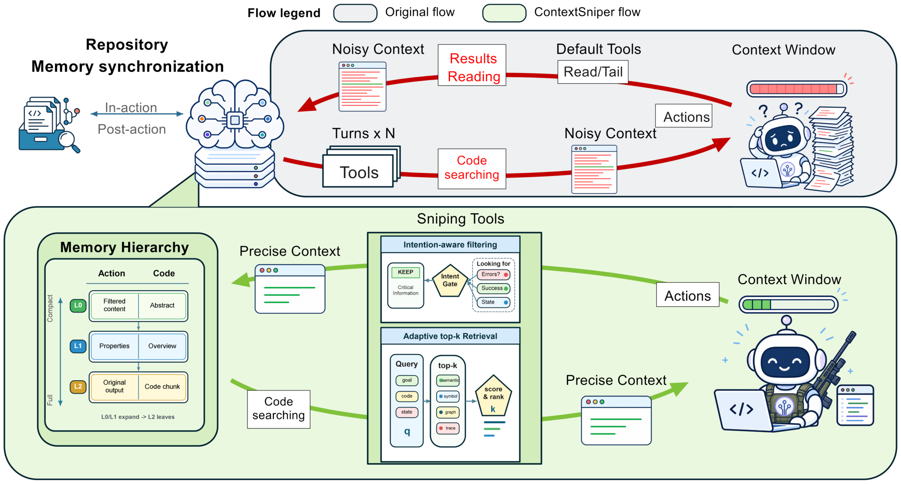
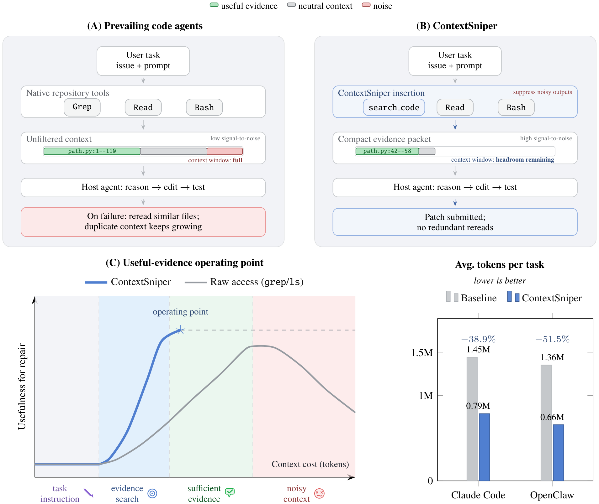
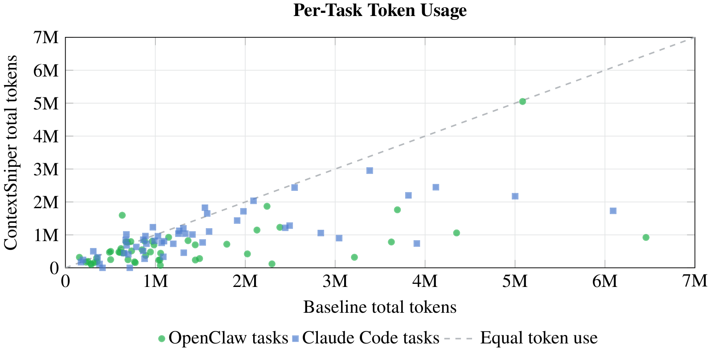

「上下文的纪律」系列 · 第 5 篇
翻找花掉的token，能拦下来多少？
▍找不到证据，就再读一遍
编码智能体修bug时有一个稳定的行为模式：第一次修改没通过测试，它不会停下，而是把相关文件再整个读一遍；还不行，就换个关键词重新搜一遍；再不行，就把刚才看过的那段栈轨迹从头再看一遍。华为团队今年发表的这篇论文，开篇第一句写的正是这个循环。
每一轮重读都在往上下文里加东西：整个文件的长读、宽泛的搜索结果、几百行的终端输出。需要的那几行确实混在里面，但混在一起的还有无关函数、重复日志和上一次失败探索的残留。论文把代价归成两条：一是成本，后面每一步推理都要背着越来越多的token走；二是决策质量，解释失败的关键几行被大量无关内容稀释，而长上下文研究早已表明，模型在长输入中并不能可靠地利用相关信息（参考本系列第二篇荐读论文，关于上下文窗口中部信息利用率下降的讨论）。
这篇论文的处理位置和常见做法不同。常见思路是等prompt已经很长了再压缩；ContextSniper把关口前移到输出产生的那一刻：读文件、跑命令的结果先过一道按意图过滤的检查，只放行与当前任务相关的证据，其余存进窗口外的记忆层，需要时可以取回。
【人工补充位 · 建议2–4句】写一段你的观察：你的智能体有没有"越修越重读"的经历，一轮失败之后它重读的是什么（整个文件／同一批搜索结果／同一段日志）；你在token账单或上下文占用上看到过翻找类开销占多大比例；你有没有试过压缩或摘要手段，效果如何。
本期论文
ContextSniper: AntTrail's Token-Efficient Code Memory for Repository-Level Program Repair
ContextSniper：AntTrail面向仓库级程序修复的省token代码记忆
Chiwang Luk et al.（华为、香港科技大学广州、南洋理工大学），2026-07（arXiv:2607.01916v3）
简要结论：在编码智能体和代码仓库之间插一层"上下文访问层"，读文件、跑命令的输出在进入上下文窗口之前先按意图过滤，证据带出处放行、原件外存可恢复。SWE-bench Lite同任务对照下，OpenClaw总token省51.5%、Claude Code省38.9%，修复率各降2个百分点、基本不变。
名词速查
▸ SWE-bench Lite：从真实GitHub issue构建的修复任务基准的轻量子集；本文每个对照条件随机抽50个任务。
▸ 宿主智能体（host agent）：负责规划、编辑、验证的编码智能体本体。本文的两个宿主是Claude Code和OpenClaw，插入层不替换它们。
▸ MCP（Model Context Protocol）：把外部工具接入智能体的标准协议；本文用它向Claude Code提供检索与编辑工具。
▸ 证据包（evidence packet）：过滤后返回给模型的紧凑材料，每条代码摘录带仓库路径和行区域，每条运行时信号标注产生它的命令或编辑。
▸ 门控（gate）：在工具输出进入上下文窗口之前决定放行哪些内容的检查环节。
主流编码智能体通过原生仓库工具获取证据：grep式搜索、整文件读取、bash命令。这些工具的输出不经筛选，直接进入上下文窗口，论文称之为"原始访问"（raw access）。修复任务里最贵的部分往往不是写补丁，而是反复找到那些要紧的文件、符号和测试。上一篇讨论的ACQUIRE是在动手之前把该知道的事备齐；这一篇面对的是运行中的另一件事：每次读文件、每次跑命令，放什么进窗口。
"When a coding agent cannot find the evidence it needs, it does not stop; it rereads."
── 中译：编码智能体找不到所需证据时，它不会停下来，而是再读一遍。（原论文§1.1，全文第一句）
单纯删减解决不了这个问题。简单截断可能恰好删掉唯一解释bug的那条测试断言或import依赖；通用摘要会弄糊出处、行号和可编辑性，而这三样恰恰是修复要用的。有效的上下文管理必须删得激进，同时保留住异构的修复信号：issue意图、代码结构、符号定义、失败观察、命令结果、编辑之后的最新状态。
论文在相关工作版图上给自己定的位置叫"上下文访问层"（context-access layer）：基准（SWE-bench）定义任务；自主修复智能体（SWE-agent、AutoCodeRover）把上下文选择耦合在自己的探索循环里；流水线式方法（Agentless）把定位做成一个阶段。本文把"哪些仓库与运行时证据允许进入prompt"独立成一层，插在宿主智能体和仓库之间：规划、编辑、验证仍归宿主管，这层只管证据的路径。
系统的核心原则，论文写成一句话：广检索，窄暴露（retrieve broadly, expose narrowly）。全部仓库证据和运行时输出存在窗口外的记忆层里，用多路信号检索；返回给模型的，只有可能支撑定位、改补丁、做验证的片段和事实。返回的材料论文叫证据包：每段代码摘录带仓库路径和行区域，每条运行时信号标注产生它的命令或编辑。名字里的Sniper（狙击手）是论文自选的比喻，指从大片噪声中精确截取证据这个动作。
"This paper builds on a different view of context: evidence, not ballast."
── 中译：本文基于另一种上下文观：上下文是证据，不是压舱物。（原论文§1.2）
落到实现，是四件事：两族记忆、两阶段同步、混合检索、意图感知门控。
| 组件 | 做什么 | 关键细节 |
|---|---|---|
| 双族记忆 | 把代码与运行时证据存到窗口外 | 代码族＋动作族，各分L0摘要／L1元数据／L2全内容三层，AGFS文件系统后端 |
| 两阶段同步 | 编辑之后记忆不失效 | 动作钩子即时刷新＋每轮新提示到达时与工作树对账 |
| 混合检索 | 多信号找证据，按预算定返回量 | 语义嵌入＋BM25＋符号＋图关系，加权RRF融合；弱召回时ripgrep兜底 |
| 意图感知门控 | 决定什么进入模型视野 | 文件读／命令输出／状态信号三类保留策略；截断处打标记，原件入记忆 |
表 1｜ContextSniper的四件实现组件（原论文§3.2–3.5，作者整理）
记忆层分两族。代码族存仓库快照：L0是代码摘要，L1是结构化元数据（路径、行区域、符号、签名、图关系），L2是源码切片，Python按顶层类和函数用tree-sitter切分，其他语言退化为重叠行窗。动作族存本次运行的产生物：L0是过滤后的视图，L1是工具名、路径、命令状态，L2是原始未过滤输出。两族都放在AGFS后端上，每个记忆节点是一个目录，存这三种粒度的文本视图。
同步解决"编辑之后记忆变旧"的问题。这一层引入了基线所没有的一种失效：直接读文件的智能体拿到的永远是磁盘上的当前版本；走索引检索，拿到的可能是编辑前的旧版本，而旧片段同样带着路径和行号，看上去权威，模型无从分辨。基于过期代码做的判断会与它先前的编辑冲突，比如重复修改已经改过的地方，或者按已经漂移的行号去定位。论文因此把记忆新鲜度当作出处可信的一部分，用两阶段同步保证：第一阶段挂在智能体动作的运行时钩子上，搜索、读文件、编辑、跑命令都会记录触碰路径与修改，编辑走本层工具时还会校验路径、应用替换并触发该文件的记忆刷新；第二阶段在每轮新用户提示到达时，用工作树的改动对账一次索引状态。
检索是混合多路的：语义嵌入、BM25词法、ctags符号、图关系（import、调用、包含、相邻文件）各算一路，排名用加权RRF融合，索引检索太弱时退到ripgrep全文搜索兜底。查询意图决定各路的预算：回溯类查询加重路径、符号和搜索词；行为类查询加重语义和图；带状态的调试轮会提升最近触碰过的文件。返回条数随上下文预算自适应，不固定。
门控按输出类型分别处理。文件读取：保留请求区域、本地定义、导入和邻近代码。测试和shell输出：保留命令行、退出状态、断言消息、栈轨迹、失败路径和简洁的成功信号。其余输出：保留状态信号，即变更文件、触碰符号、仓库状态。长的样板代码、重复日志、无关文件区域、无信息量的尾部，从进入模型视野的版本中删去。门控有一条保守原则：删掉有用证据的代价可能大于多花token，所以宁可少删。凡是被截短的输出，原件存进动作记忆的L2层，返回视图上带一个截断标记和一行恢复提示，模型发现信息不够，可以要求展开原文。

图 2｜ContextSniper架构：上为基线路径，宽泛搜索与长输出直接累积进上下文；下为插入层路径，证据先进AGFS记忆层级，经混合检索与意图感知门控后返回紧凑证据包（原论文Figure 2）
实验在SWE-bench Lite上做，每个宿主智能体随机抽50个任务，基线（原生工具）与插入层跑同样任务对照。两个宿主覆盖两种部署形态：OpenClaw是开源智能体，插入层走plugin和运行时钩子接入；Claude Code是生产环境工作流，走MCP协议接入，模型为Claude Haiku 4.5。
| 宿主智能体 | 方法 | 单任务平均token | 总成本 | 平均动作数 | 修复（50任务） |
|---|---|---|---|---|---|
| OpenClaw | 基线 | 1.36M | $0.635 | 32.1 | 13个（26.0%） |
| OpenClaw | 插入ContextSniper | 0.66M（−51.5%） | $0.404（−36.4%） | 17.2（−46.4%） | 12个（24.0%） |
| Claude Code | 基线 | 1.45M | $15.09 | 29.9 | 16个（32.0%） |
| Claude Code | 插入ContextSniper | 0.79M（−38.9%） | $10.97（−27.3%） | 19.2（−35.7%） | 15个（30.0%） |
表 2｜主结果（原论文Table 2，SWE-bench Lite每宿主50个匹配任务，作者整理）
OpenClaw上，单任务平均token从1.36M降到0.66M，总降幅51.5%；成本降36.4%；动作数从32.1降到17.2，降46.4%，其中读文件和搜索类的上下文获取动作从572降到461。Claude Code上，总token从85.97M降到52.55M，降38.9%，成本降27.3%，动作数降35.7%。动作数同步下降说明过滤改变了行为：模型收到的每次输出更紧凑，重复翻找随之减少。
修复率的措辞值得照录：当前结果支持的是效率主张，而不是解决率提升主张。两个宿主上修复数各降1个（26.0%到24.0%、32.0%到30.0%），且验证环节的错误报告不均衡，论文明确说这不足以对修复成功率下强结论。诚实的读法是：这层插入件省了钱，没有白送修复率提升，也没有可测的损失。

图 1｜基线（A）与插入层（B）的工作流对照，(C)为概念示意：证据够用之后再往里加，多半是成本和干扰；条形为两宿主单任务平均token实测（原论文Figure 1）
平均值之外，分布更有信息量。图3把每个任务的基线token与插入层token画成散点，OpenClaw的50个匹配任务里45个落在对角线下方（更省），Claude Code的任务同样大多在下方。剩下5个上涨的案例，论文逐个查了轨迹，归出两类。

图 3｜逐任务token对照：每个点是一个任务，对角线下方表示插入层更省（原论文Figure 7）
一类是固定开销摊不平。pylint-7228、flask-5063、matplotlib-24265三个任务上，插入层的动作数与基线相同，只是多出2到4次代码检索调用，token涨幅9.6%到17.3%。任务本身够短，检索层的启动和搜索轮次省不回来。另一类是检索没给出决定性的证据。seaborn-3407上涨152.3%：插入层路径用了6次检索、32个动作，基线只用21个动作就完成了。首个证据包没命中关键文件时，宿主只能接着搜。配套的召回测量（按仓库统计目标文件是否出现在检索前几名）显示，召回低的仓库正是上涨集中的地方。
适用条件由此清楚：早期检索能替代大范围探索的任务上，门控收益最大；基线本就极短的任务、或首轮检索失手的任务上，检索开销反而叠上去。论文另做了一个5任务的Django试点，与mem0、Letta、Serena等六种记忆或检索集成对比：ContextSniper平均token最低，通过数不落后（多数方法4/5，OpenViking为5/5），论文自己把它标为探索性证据，不作主对比用。
相关工作三条线，各改一环。prompt压缩（LLMLingua、RECOMP、Selective Context等）作用于已经选进prompt的文本，把它压短。工具输出过滤（RTK报告省60–90%，Headroom省60–95%）在命令和工具输出上做过滤，与本文最接近，但没有与工作树同步的代码记忆。仓库记忆与定位（RepoGraph、KGCompass等）提供检索，不管什么进窗口。ContextSniper把三件事合成一个访问层，作用位置比压缩更靠前。
| 维度 | prompt压缩 | 工具输出过滤 | ContextSniper门控 |
|---|---|---|---|
| 作用位置 | 已选进prompt的文本 | 命令与工具输出 | 读与命令输出进窗口之前，含检索返回 |
| 出处保留 | 摘要后常模糊 | 各方法不一 | 路径＋行区域＋产生命令 |
| 原件可恢复 | 一般不留原件 | Headroom可取回 | 原件入动作记忆，带恢复提示 |
| 代码记忆同步 | 无 | 无 | 编辑后两阶段同步 |
表 3｜压缩与门控两条路线的对比（原论文§2.4–2.5、§3.5，作者整理）
与均匀压缩最实质的差异在可追溯与可恢复。压缩后的文本是一段新的话，出处和行号可能已经模糊；门控返回的每条证据带源，被删的原件在记忆层里，恢复提示随行。模型拿到的不是一份摘要，是一份带索引的节选。
部署上，因为边界收窄到只管证据路径、不动宿主的规划编辑验证，同一套机制有两种接法：Claude Code走MCP工具，search_code作为grep和探索性读取的首选替代，配对的edit_file负责校验路径、应用替换并刷新记忆；OpenClaw走plugin和运行时钩子。论文的讨论部分把这层的位置总结为一句话式的分工：宿主智能体决定解决什么问题、写什么补丁；这层决定在有限上下文预算下怎么暴露仓库证据。上下文管理由此成为系统里的一个显式层，而不是文件读取和shell命令顺带的副作用。
▍注记：这篇论文的边界
每宿主50任务属试点规模，论文自列的待办包括更标准的验证、更多任务、SWE-bench Verified与置信区间。修复率差异受验证错误不均衡影响，本文只能主张效率。效果依赖检索与索引质量：证据信号弱、分布在不寻常文件里、或只有跑完测试才可见时，检索可能漏。过滤策略太激进会删掉有用证据，论文把可学习的过滤策略与可人工检查的取舍轨迹列为未来工作。基准为单一Python仓库集合，跨语言未验证。5任务Django试点是探索性证据。
▍把关口前移，落到自己的工作流
这篇论文的论证链条：翻找是token开销的大头；把过滤位置前移到输出产生之时，配合窗口外记忆与保守放行，两个宿主上省四到五成token而修复率基本不变；逐任务解剖再给出适用条件，检索顶用时收益最大，检索失手时开销叠加。系列连起来看：上一篇解决动手之前备什么料，这一篇管运行之中每份输出放不放进窗口。材料已经进了窗口、想压掉又怕丢，是再下一道工序。
落到自己的工作流，三个可以直接用的做法：
1. 先查账再优化：统计智能体各动作的token占用，读文件、搜索、命令输出这类翻找开销通常是大头，账目清楚了再决定优化哪里。
2. 过滤做在进窗口之前，保留出处：放行的证据带路径、行号和产生命令，被删的原件留底可恢复；不要用均匀摘要把出处弄糊。
3. 保守优先：删错证据的代价大于多花token；被截断的地方留标记和恢复途径，让模型自己能要求展开。
【人工补充位 · 建议3–5句】结合你的工作流写评论：你的智能体链路里有没有类似"输出过滤"的层（hook、代理、工具包装）；你见过最浪费的单次输出是什么（长日志、全文件读、重复搜索结果）；如果只允许在一处设这道门，你会设在哪里、放多宽。
论文：ContextSniper（arXiv:2607.01916v3，2026-07，Chiwang Luk et al.，华为/HKUST(GZ)/NTU）。评估代码与AntTrail引擎见gitcode.com/lukchiwang/ContextSniper及gitcode.com/datagallery/AntTrail。文中图表均引自原论文（Figure 1/2/7）；表1–3依据原论文§3.2–3.5、Table 2、§2.4–2.5及§4.3由作者整理，非原图截取；引文为原文直录并附中译；数字已逐项与论文PDF原文核对。